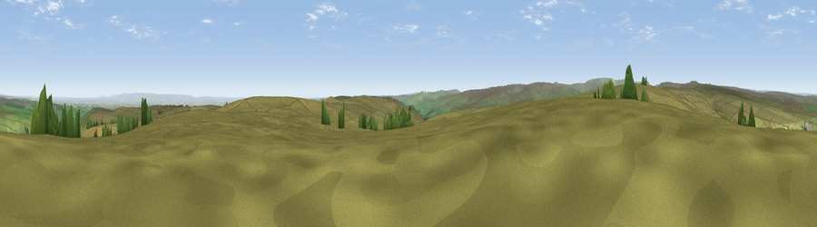

Viewpoint near Lofthouse
#8196 in England · top 9% of its area beats it · near LofthouseWhere it is
The exact computed spot (SE 13800 74800). Click the marker for map links.
The view, rendered

A 360° render of this exact spot computed from the terrain model, tree cover and land cover — summer colours, afternoon light, calibrated against photographs of famous viewpoints. Real trees, hedges and buildings will differ in detail.
The panorama
Grey silhouette: terrain skyline in each direction (720 bearings, Earth curvature and refraction included). Dashed green: skyline with trees (+15 m) and buildings (+8 m) as obstacles. Blue strip: how far the ground is visible on each bearing.
Where the view opens
Wedge length = distance to the farthest visible ground on that bearing (vegetation-aware). Rings at 10, 25 and 50 km.
What fills the view
91% grassland · 5% cropland · 3% woodland
Angular shares of the visible panorama (visual magnitude), not map area. Landscape diversity 0.17 (0–1 Shannon).
Key numbers
More beautiful places nearby
The staircase of upgrades: each row has a higher view potential than everything closer. Driving times are estimates from straight-line distance, calibrated against real road routing — check an actual route before setting out.
| Place | Direction | Drive | Score |
|---|---|---|---|
| Viewpoint near Lofthouse | WNW · 3 km | ~8 min | 66.1 |
| Throstle Hill | NW · 4 km | ~9 min | 67.2 |
| Viewpoint near Lofthouse | NW · 4 km | ~10 min | 68.2 |
| Viewpoint near Lofthouse | NW · 5 km | ~12 min | 69.7 |
| Viewpoint near Grewelthorpe | ENE · 9 km | ~18 min | 73.9 |
| Viewpoint near East Witton | N · 10 km | ~20 min | 77.8 |
| Viewpoint near Kirby Knowle | ENE · 34 km | ~52 min | 80.5 |
| Viewpoint near Thirlby | ENE · 38 km | ~57 min | 81.5 |
54.16881, -1.79012 · source: screening · position refined by local search. Computed location — check access rights before visiting.